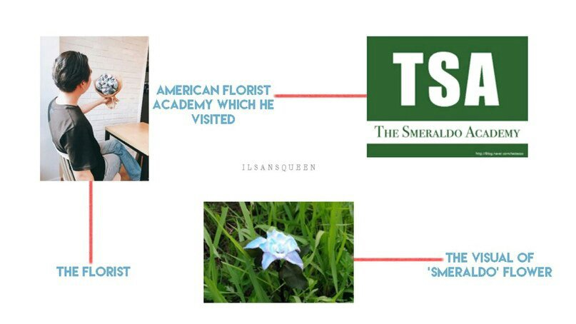

Привет. Я флорист ‘Testesso’.
Причина, по которой я создал этот блог, — это мое желание рассказать вам о таком цветке, как «смеральдо». В данный момент я готовлюсь к открытию магазина, специализирующемся на этом цветке, к середине сентября. Кто-то может подумать, что блог — способ продвижения магазина, но я думаю, что моя встреча со смеральдо — это не просто бизнес. Нить судьбы, связывающая меня со смеральдо, впервые проявляет себя пять лет назад. Я учился за границей, в Северной Дакоте (Центральная Северная Америка) и решил поехать в Вирджинию, чтобы принять участие в "FLOWER 2012", которое организовывала Американская Академия Флористов.
По плану, чтобы добраться из Северной Дакоты до Вирджинии, требуется пять часов, но путь от моего общежития и до академии у меня занял семь часов.Но после этого долгого путешествия всё, что я обнаружил на месте проведения ивента, было баннером с надписью «Происхождение игральных карт». "FLOWER 2012" закончился на прошлой неделе, и тогда на этом месте проводила своё мероприятие Американская Академия Игральных Карт. Я записал неправильную дату в своём блокноте. В тот момент я был взволнован и ошарашен, но сейчас, оглядываясь назад, я думаю, это была судьба. Я был таким уставшим, что сил идти куда-то ещё не было, поэтому я просто остался там послушать лекцию.
К счастью, лекция оказалась интересной и особенно меня очаровала часть про цветок, потому что я работаю флористом. Догадываетесь, что этим цветком был «смеральдо»? Если вы взглянете на фото, то поймёте, что у смеральдо есть своя приятная атмосфера. Романтичная форма лепестка с проникновенным и таинственным цветом. Разве вы не чувствуете, что за этим стоит печальная история? И это правда. Смеральдо — это цветок с душераздирающей историей. Вы можете ознакомиться с этой историей с помощью языка цветов, в котором «non potevo dire la verità» имеет значение «правда, которая не может быть сказана» в переводе с итальянского. Думая об этом значении, Вы понимаете, что это история о любви, трагичной любви? Верно? Отныне я буду понемногу рассказывать в этом блоге историю о смеральдо и игральных картах. 